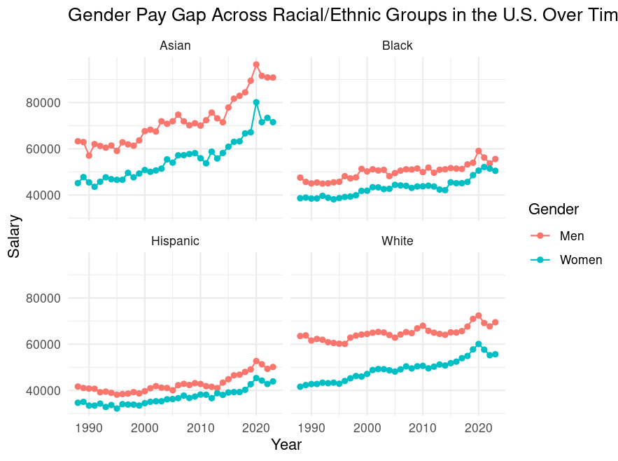
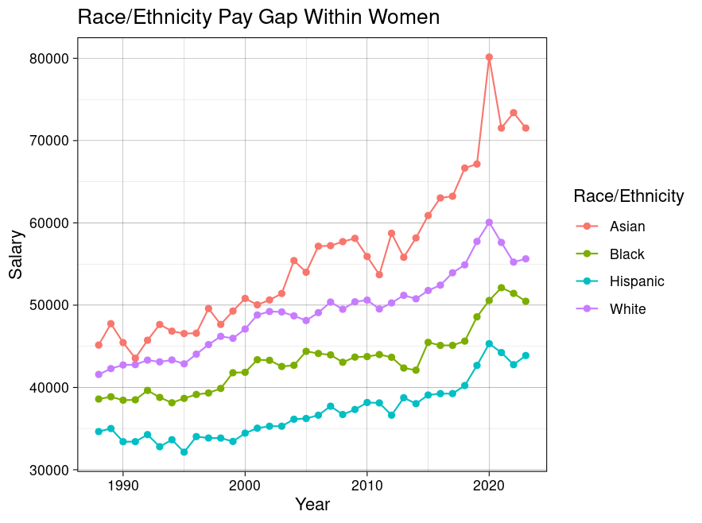
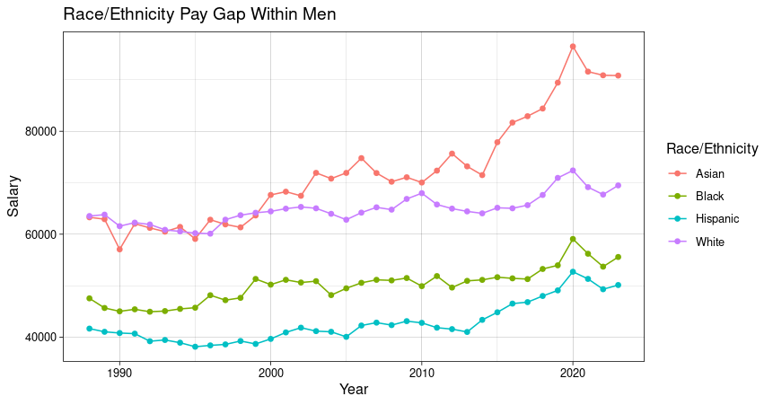
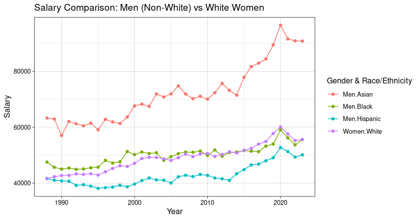
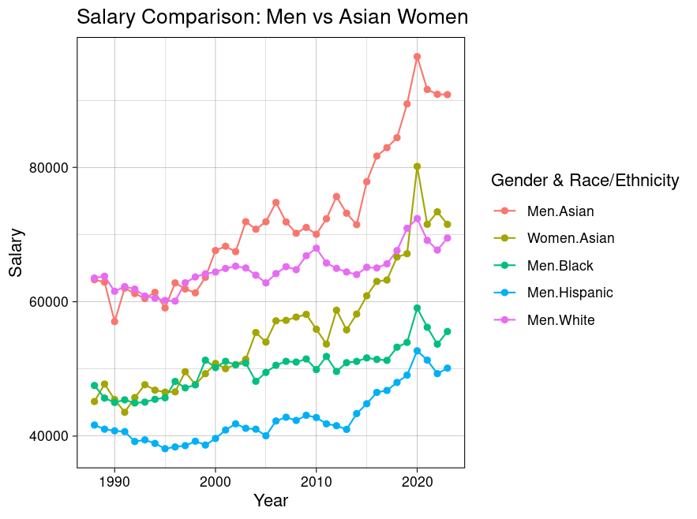

Introduction
The gender pay gap is problem any where in the world where women are constantly earning less than men. Despite a lot of progress that has been made by a lot of countries, this continue to be a problem. We would take a look at how the U.S. has combated the gender pay gap by taking a look over a time frame of 1988 to 2023. We would also take a look to see how the gender pay gap is based on racial/ethnic groups. This to allow us to answer the question if men are constantly earning more than women withing each racial/ ethnic group - or are there any exceptions?
Prediction
Based on personal knowledge I am assuming that across all racial groups men earn higher than women regardless of their ethnic or racial background.
Data Source
The data was derived from a data set from Kaggle which was then obtain from the U.S. Department of Labor
Approach
This data set provides information on the median annual salaries in the United States, broken down by race and sex, from 1988 to 2023. The collection of the data based on the owner of the data set on keggle was downloaded from the official website of U.S. Department of Labor and after removing the initial years - which did not contain salaries from some ethnic groups, they were reorganized in order to be better accessible and better for usable analyses.
The variables included in the data set are the following: Year, Salary, Sex - Man and Women, and Race/Ethnicity - Asian, White, Black, and Hispanic
Tools
The tools used for this project were the following R and RStudio in Posit.Cloud; GitHub for website hosting and the package of tidyverse
Approach/Predictions
In order to be able to answer the question if men are constantly earning more than women withing each racial/ethnic group - or are there any exceptions? We would create different graphs that would allow us to visualize the differences within each racial/ethnic groups and sex and how doe that reflect their on the salary. As well as being able to see the correlation of the salary between race/ethnicity and women as well as for men. Lastly, we would create a graph that will show the whether white women earn higher compared non white men.
Based on all of this, I am predicting that white man will earn higher across all racial/ethnic group and compared to women.
Results
Code
library(tidyverse)
salarydata <- read.csv("salary_bras.csv")
#To clean and transform the data for better use
salarydata <- gather(
salarydata,
group,
salary,
Asian.Men:White.Women,
factor_key = TRUE
)
salarydata$ethnicity <- str_split_i(
salarydata$group,
"\\.",
1
)
salarydata$gender <- str_split_i(
salarydata$group,
"\\.",
2
)
#To filter a data set without the total values
salary_data_filter <- salarydata |> filter(ethnicity != "Total")
??salarydata
#To create a graph that shows how are women and man pay across racial groups
ggplot(salary_data_filter, mapping = aes (x = Year, y = salary, group = gender,
color = gender)) +
geom_line()+
geom_point()+
facet_wrap(~ethnicity) +
labs(title = "Gender Pay Gap Across Racial/Ethnic Groups in the U.S. Over Time 1988 to 2023",
y = "Salary",
x = "Year", color = "Gender")+
theme_minimal()
ggplot(salary_data_filter, mapping = aes( x= Year, y = salary,
color=gender))+
geom_line()+
geom_point()+
facet_wrap(~ethnicity)
# To create a filter of Non White Males vs White women
salarydata_whitewomen <- salary_data_filter |> filter((
gender == "Men" & ethnicity != "White") | (
gender == "Women" & ethnicity == "White"))
# The creation of the plot of the comparison
ggplot(salarydata_whitewomen, aes(
x=Year, y=salary, color = interaction(gender, ethnicity)))+
geom_line()+
geom_point()+
labs(title = "Salary Comparison: Men (Non-White) vs White Women", x = "Year",
y = "Salary", color = "Gender & Race/Ethnicity")+
theme_linedraw()
#To create a filter of Women only
salarydata_women <- salary_data_filter |> filter(gender == "Women")
salarydata_women
#To create a filter of Men only
salarydata_men <- salary_data_filter |> filter(gender == "Men")
salarydata_men
#To create a plot for women pay gap across groups
ggplot(salarydata_women, aes(
x = Year, y = salary, color = ethnicity))+
geom_line()+
geom_point()+
labs(title ="Race/Ethnicity Pay Gap Within Women", x = "Year", y = "Salary",
color = "Race/Ethnicity")+
theme_linedraw()
#To make a graph to show the pay gap within men
ggplot(salarydata_men, aes(
x = Year, y = salary, color = ethnicity))+
geom_line()+
geom_point()+
labs(title ="Race/Ethnicity Pay Gap Within Men", x = "Year", y = "Salary",
color = "Race/Ethnicity")+
theme_linedraw()
# To create a filter of Men vs Asian women
salarydata_asianwomen <- salary_data_filter |> filter((
gender == "Men") | (
gender == "Women" & ethnicity == "Asian"))
# The creation of the plot of the comparison
ggplot(salarydata_asianwomen, aes(
x=Year, y=salary, color = interaction(gender, ethnicity)))+
geom_line()+
geom_point()+
labs(title = "Salary Comparison: Men vs Asian Women", x = "Year",
y = "Salary", color = "Gender & Race/Ethnicity")+
theme_linedraw()
 x = Year, y = salary, color = ethnicity))+ geom_line()+ geom_point()+ labs(title =“Race/Ethnicity Pay Gap Within Men”, x = “Year”, y = “Salary”, color = “Race/Ethnicity”)+ theme_linedraw()
This graph allow us to see that across all racial/ethnic groups men still earn higher than women. It also allows us to see that compare to the other race/ethnicity Asian men tend to earn higher than everyone else.

This graphs allow us to see that across all racial/ethnic groups of just women. It allow us to see that Asian women earn higher compared to the rest of women within each of their race/ethnicity group.

This graphs allow us to see that across all racial/ethnic groups of just men. It allow us to see that Asian men earn higher compared to the rest of men within each of their race/ethnicity group.

This graph allow us to see that fro the past decade White women median salary has been increasing to be higher than Black men and Hispanic men but the there is still a big gap between Asian men.

I decided to create this graph after the first graph, since it made me realize that at some point Asian women have earned higher than White men, this graph goes into detail to see this comparison. As we can see Asian man still earn higher than everyone else but Asian women have started to earn higher than White man since 2020.
Discussion
The data allow for me to be able to create different types in order for me to be able to answer my initial question of whether man earn higher across all racial/ethnic groups. Across the findings we were able to see that yes, man earn higher than women across all racial/ethnic groups but to my surprise I was able to find that Asian men and Asian women earn higher than White man. This was surprising to me since I would always hear White man earning higher across all racial and ethnic groups and women.